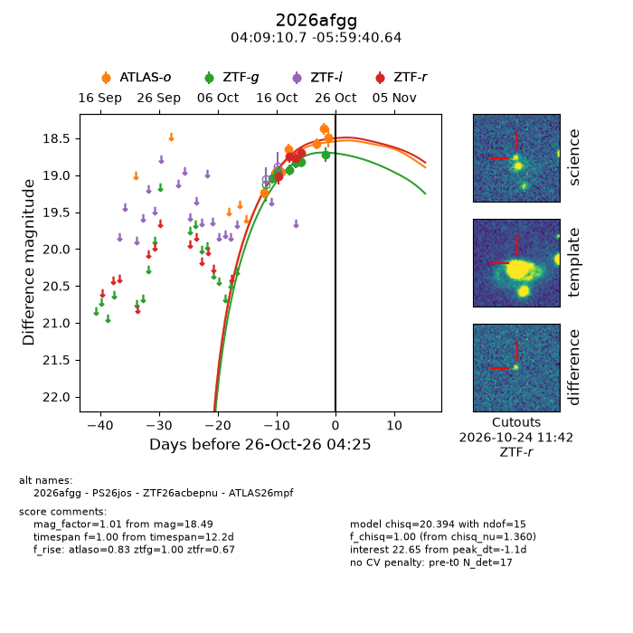
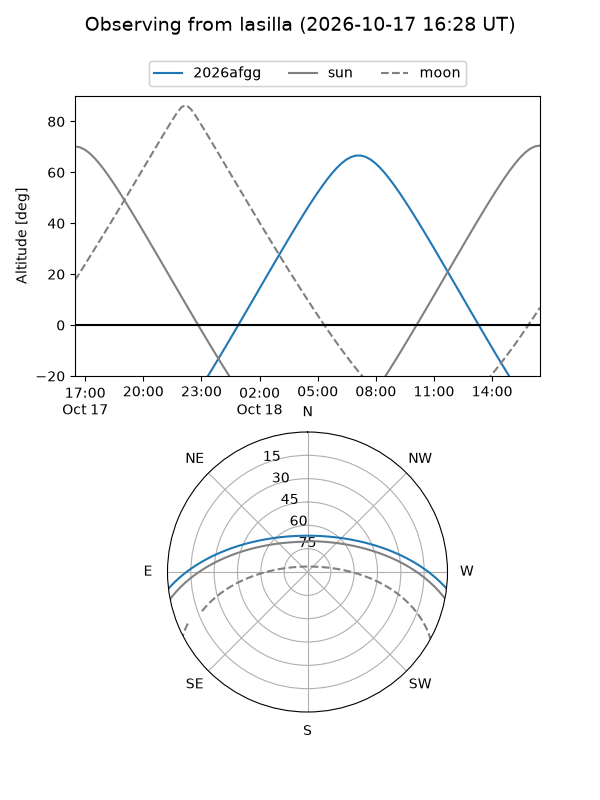
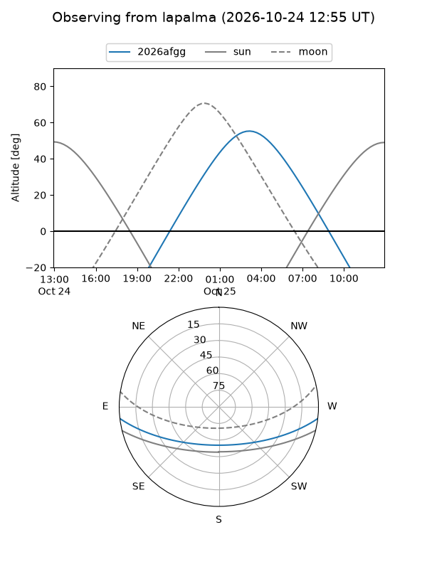
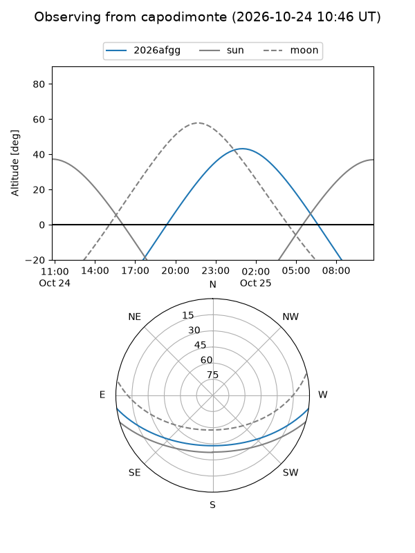
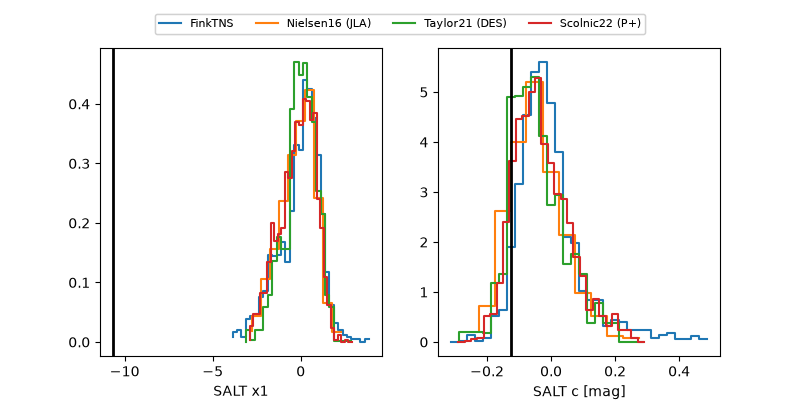

2026afgg
Target 2026afgg at 2026-10-26 04:26
Aliases and brokers:
FINK-ZTF: ztf.fink-portal.org/ZTF26acbepnu
Lasair-ZTF: lasair-ztf.lsst.ac.uk/objects/ZTF26acbepnu
ALeRCE-ZTF: alerce.online/object/ZTF26acbepnu
YSE-PZ: ziggy.ucolick.org/yse/transient_detail/2026afgg
TNS name: wis-tns.org/object/2026afgg
Direct TNS query: direct search
alt names
ZTF26acbepnu (ztf,fink_ztf)
2026afgg (tns,yse)
ATLAS26mpf (atlas)
PS26jos (panstarrs)
Coordinates:
equatorial (ra, dec) = 62.2945,-5.99462
equatorial (HMS+DMS) = 04:09:10.67,-05:59:40.64
galactic (l, b) = (197.9656,-38.55197)
Flags:
peak dt: -1.1
Photometry:
last atlaso=18.49, ztfg=18.73, ztfr=18.70
7 atlaso, 6 ztfg, 4 ztfr detections
Lightcurve

Visibility



Additional plots
